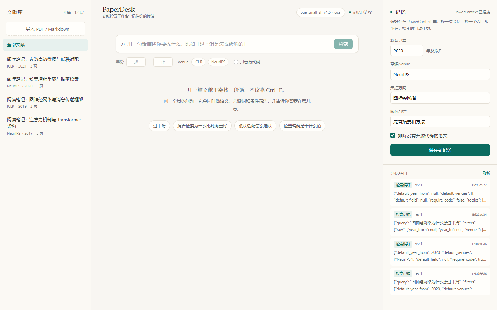
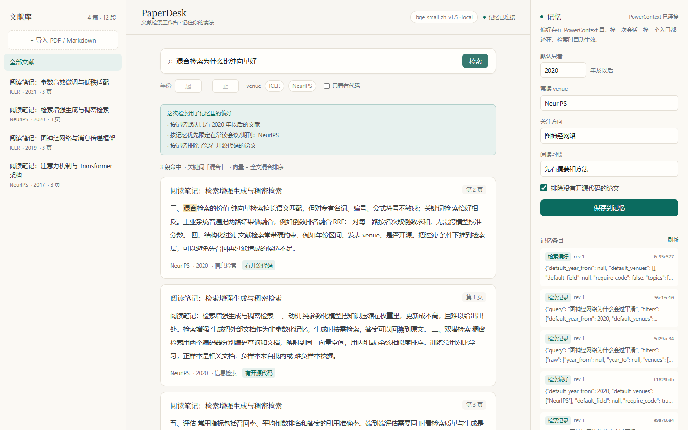

页级定位
PDF 按页解析、再切成约 360 字的段落。每个段落都带着论文标题、年份、会议、页码， 命中后直接给出原文片段并高亮关键词，不需要再打开文件。
参赛项目 · 学习与科研效率
PaperDesk 是一个本地优先的文献工作台：把 PDF 变成可检索的段落， 用 seekdb 做向量、关键词与条件过滤的混合检索， 用 PowerContext 记住你的检索习惯，下次自动生效。

01 · 问题
读研、写综述、跟课题时，文献通常散在十几个文件夹里。你记得“有一篇讲图神经网络过平滑的”， 但记不住标题，也记不住文件名。通用搜索给出的是整篇 PDF，接下来仍然是 Ctrl+F、翻页、再翻页。
更麻烦的是，检索条件其实很稳定：你常看某几个会议、只看近几年、偏好有开源代码的论文。 但每次打开一个新工具，这些偏好都要重新勾一遍，工具不会记住你。
02 · 能力
PDF 按页解析、再切成约 360 字的段落。每个段落都带着论文标题、年份、会议、页码， 命中后直接给出原文片段并高亮关键词，不需要再打开文件。
向量语义、全文关键词、元数据过滤三路一起进 seekdb。三路结果在库内用 RRF 融合， 而不是应用层各查一遍再拼接。年份、会议、领域、是否有代码都可以叠加。
默认年份、常读会议、是否只看有代码的论文，写进 PowerContext。 下一次检索自动套用，并在结果上方逐条说明“这次按记忆改了什么”。
03 · 技术分工
偏好与检索留痕，带 revision 的 Memory 条目
读最新偏好，转成 seekdb 的 where 条件
hybrid_search：向量 + 全文 + 标量过滤，RRF 融合
data/seekdb/，不需要 Docker 或独立服务。hybrid_search：向量 KNN、$contains 全文匹配、where 标量过滤，三路在库内融合。/v1/memory/remember，读取时取 saved_at 最新的一条。因果关系是可验证的：同一句 query，写入偏好前后结果集不同。 不是“装了组件”“通了连接”，而是偏好真的改变了 seekdb 的过滤条件与返回结果。
性能也做了实测：一次检索的中位耗时从 6.5s 降到 115ms。 瓶颈不在 seekdb，而在每次检索新建 3 个 PowerContext 连接（本机建连约 1.5s）； 改成连接池、偏好 TTL 缓存和语料缓存后，检索路径只剩一次库内混合检索。
04 · 验证
/api/memory 读到。
== 3. 第一次检索（记忆为空）==
[PASS] 命中结果 — 12 段
[PASS] 首条命中《图神经网络》第 2 页
[PASS] 未应用记忆偏好 — memory_notes 为空
关键词（全文分支）：平滑
== 5. 第二次检索（同样的 query，记忆生效）==
[PASS] 检索时自动应用了偏好 — 3 条
[PASS] 结果全部满足记忆约束 — 3 段，违规 0 段
[PASS] 结果数量因过滤而收缩 — 12 → 3 段
结果：14/14 项通过
以上为本机实测输出。样例文献为项目自撰的阅读笔记，不含论文原文；脚本可重复执行，
--reset 会先清空偏好，保证从初始状态开始。
05 · 运行
powershell -ExecutionPolicy Bypass -File scripts\start.ps1
.\.venv\Scripts\python.exe scripts\seed.py打开 http://127.0.0.1:8080
bash scripts/start.sh
.venv/bin/python scripts/seed.py脚本退出时会一并停掉它启动的 PowerContext。
/mcp 参数。先执行：
export MSYS2_ENV_CONV_EXCL="POWERCONTEXT"
export MSYS_NO_PATHCONV=1
或改用 PowerShell。
HF_ENDPOINT=https://hf-mirror.com；
下载失败会自动降级到 pyseekdb 自带的英文 MiniLM，应用仍可启动。
配置全部在 .env，示例文件只含占位值，不包含任何真实 API Key、密码或凭据。
完整的依赖版本、分步启动、接口说明与常见问题见仓库 README。
06 · 工程
scripts/make_samples.py 现场生成，是本项目自撰的阅读笔记，未复制论文原文或第三方数据集。.env、data/seekdb/、data/uploads/ 已被忽略。07 · Qoder
01a191be-acc7-7d2d-8403-aae09c693514，Site ID 01a191be-accb-777c-927c-adb7a1c58023。01a191bf-8af0-753e-b459-f740a343f8f9。publish_site 契约，记录在仓库 docs/qoder-records/。01a191a9-93d1-776f-b48c-c3727d164e84。docs/development-log.md。发布 ID、上传工件 SHA-256、operation 状态与公开访问验证见 docs/qoder-sites.md； 开发记录见 docs/development-log.md。
提交信息
jiayalei225-svg/powercontext · qoder/2026-competition-ecosystempaperdesk-4qzym26fsnz.qoder.zone01a191a9-93d1-776f-b48c-c3727d164e84docs/development-log.md需求拆解、实现、调试、性能修复docs/qoder-sites.mdproject / site / release / operation ID验证日志：docs/verification-log.txt（14/14 PASS）。